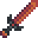

Weight
Jump to navigation
Jump to search
Weight  is a statistic that affects how far an enemy will be knocked back when attacked by the player with a weapon.
is a statistic that affects how far an enemy will be knocked back when attacked by the player with a weapon.
Weapons
The following weapons affect Weight. The effect is permanent while using the weapon.
| Image | Name | Effect |
|---|---|---|
| Crystal Dagger | ||
| Wind Spire | ||
| Claymore | ||
| Dark Sword | ||
| Bone Sword | ||
|  | Lava Katana | |
| Wood Mallet | ||
| Iron Edge | ||
| Neptune's Glaive | ||
| Galaxy Dagger | ||
| Galaxy Hammer | ||
| Ossified Blade | ||
| Tempered Broadsword | ||
| Dwarf Dagger | ||
| Dragontooth Shiv | ||
| Infinity Dagger | ||
| Kudgel | ||
| Dwarf Hammer | ||
| Dragontooth Club | ||
| Infinity Gavel |
Rings
The following rings increase Weight (knockback). The effect is permanent while the ring is equipped.
| Image | Name | Effect |
|---|---|---|
| Amethyst Ring | Increases |
| Skills & Stats | |
|---|---|
| Skills | Farming • Mining • Foraging • Fishing • Combat |
| Stats | Attack • Crit. Chance • Crit. Power • Defense • Immunity • Luck • Magnetism • Speed • Weight |